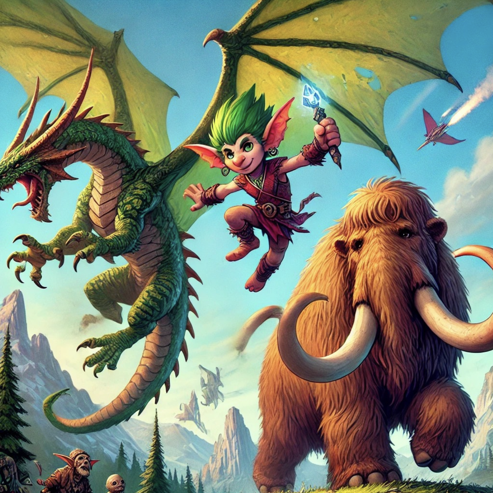
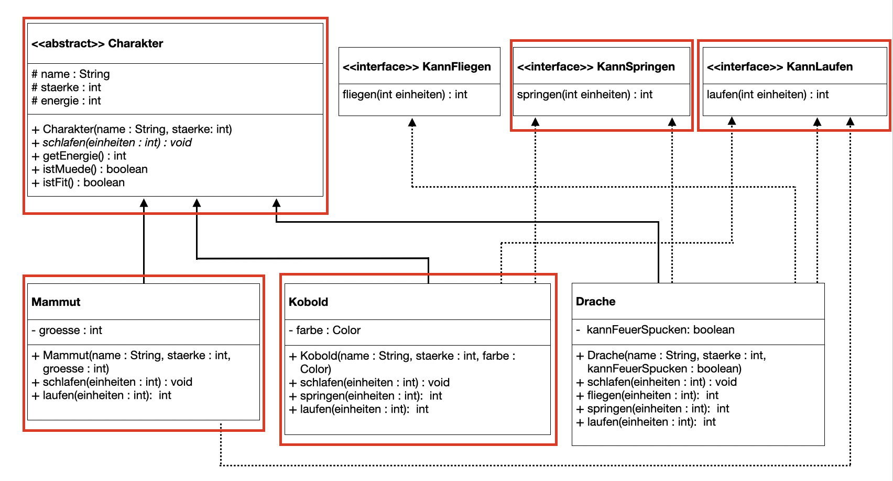

Praktikum 6: Schnittstellen
In diesem Praktikum wollen wir die Implementierung und den Einsatz von Schnittstellen erlernen.
🚀 Lernziele
Sie können:
- Schnittstellen in Java definieren
- Die Notwendigkeit bzw. den Nutzen von Schnittstellen bewerten
- Abwägen, ob und wofür wir Schnittstellen und abstrakte Klassen einsetzen
🤔 Vorbereitung
Bitte bearbeiten Sie die folgenden Aufgaben vor Ihrem Praktikumstermin. Diese sollen sicherstellen, dass Sie die gestellten Praktikumsaufgaben inhaltlich und zeitlich schaffen.

Wir werden in diesem Praktikum verschiedene Spielcharaktere mit unterschiedlichen Eigenschaften implementieren. Einige können bspw. nur laufen, andere hingegen auch springen oder fliegen. Um diese Fähigkeiten auch ausführen zu können, brauchen sie Energie. Zu Beginn hat jeder Charakter 100 Energiepunkte. Diese Punkte verringern sich mit jeder Aktivität unterschiedlich. So kostet Fliegen mehr Energie als Springen und Springen wiederum mehr als Laufen. Um wieder Energie zu tanken, müssen die Charaktere schlafen. Schlafeinheiten werden - je nach Charakter individuell - genutzt, um Energiepunkte wieder zu erhöhen.
Aufgaben:
- Schnittstellen: Bitte lesen Sie noch einmal, wie diese in Java definiert und genutzt werden (siehe Vorlesung 7).
- Klassendiagramm: Schauen Sie sich das geg. Klassendiagramm schon genau an. Wie stehen die Klassen und Schnittstellen in Verbindung?
- Interface KannLaufen: Definieren Sie das Interface KannLaufen im folgenden IDE-Fenster. Bringen Sie Ihre Implementierung bitte mit zum Praktikum.

📝 Pflichtaufgaben (1 Bonuspunkt)
1 - Umsetzung der Spielcharaktere
Schauen Sie sich genau das Klassendiagramm an. Setzen Sie bitte alle rot hervorgehobenen Klassen um.
Anforderungen:
- Zu Beginn hat jeder Charakter 100 Energiepunkte.
- Der Kobold schläft kurz und tief: Für jede Schlafeinheit soll der Kobold 10 Energiepunkte bekommen.
- Der Kobold verbraucht Energie beim Laufen: Jede Laufeinheit kostet 1 Energiepunkt.
- Springen ist anstrengend: Jede Springeinheit kostet dem Kobold 5 Energiepunkte.
- Das Mammut ist groß und schwer: Es verbraucht je Laufeinheit 5 Energiepunkte.
- Das Mammut erholt sich nur langsam: Je Schlafeinheit bekommt es 2 Energiepunkte.
- Ein Spielcharakter ist fit, wenn er mehr als 10 Energiepunkte hat. Achten Sie auch darauf, dass die Energie nicht negativ werden darf.
- Erstellen Sie in der Main.java einen Kobold und ein Mammut. Erstellen Sie eine gemeinsame Liste, in die Sie beide Spielcharaktere aufnehmen. Legen Sie alle Charaktere der Liste (foreach-Loop!) für 10 Einheiten schlafen.
- Annahmen: Treffen Sie sinnvolle Annahmen für Werte, die nicht gegeben sind.
⭐ Zusatzaufgaben (1 Bonuspunkt)
2 - Erweiterungen um weitere Spielcharaktere und Fähigkeiten
Setzen Sie nun bitte auch die Klasse Drache sowie das Interface KannFliegen um (siehe Klassendiagramm).
Anforderungen:
- Der Drache erhält je Schlafeinheit 5 Energiepunkte.
- Der Drache verbraucht je Flugeinheit 10 Energiepunkte, je Sprungeinheit 5 Energiepunkte und je Laufeinheit 2 Energiepunkte.
- Legen Sie einen Drachen in der Main.java an und fügen Sie diesen ihrer Charakter-Liste hinzu.
- Führen Sie verschiedene Aktionen (Laufen, Springen, Fliegen, Schlafen) für ihre Charaktere durch (mind. 2 Aktionen/Charakter).
- Annahmen: Treffen Sie sinnvolle Annahmen für Werte, die nicht gegeben sind.
Ergänzen Sie Ihre Ideen gern hier (Speichern und Laden der vorhergehenden Aufgabe) oder fügen Sie es direkt im vorhergehenden IDE-Fenster hinzu.